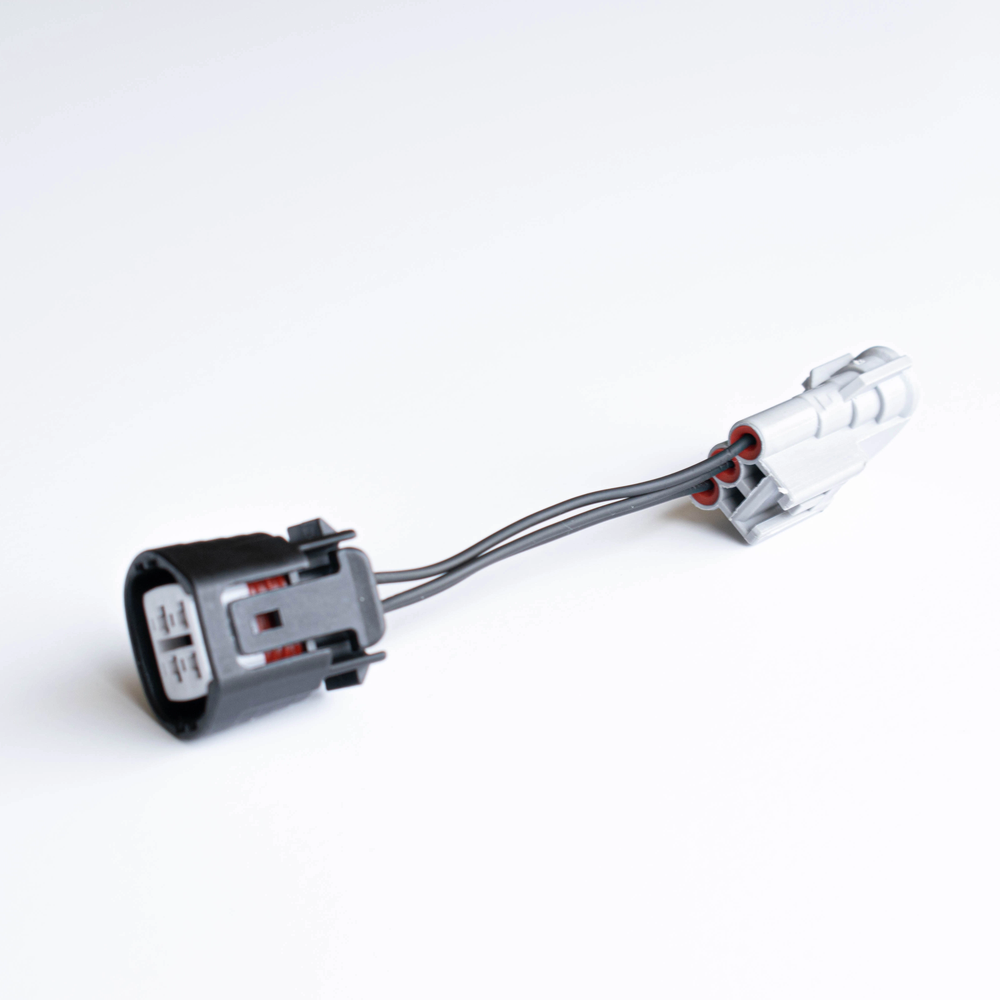
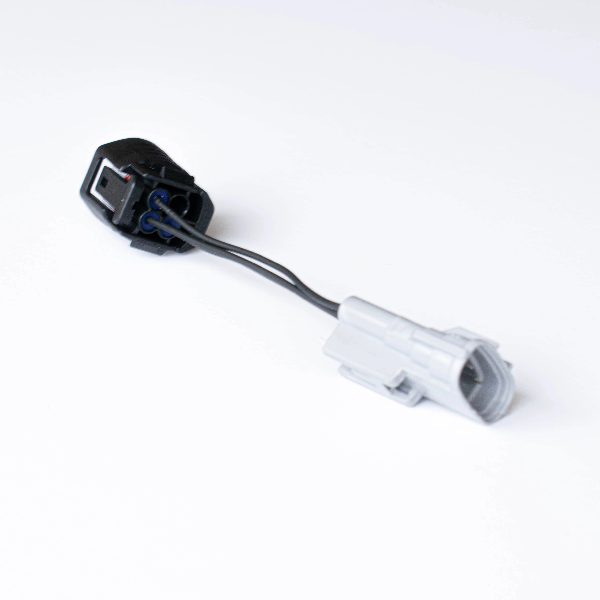
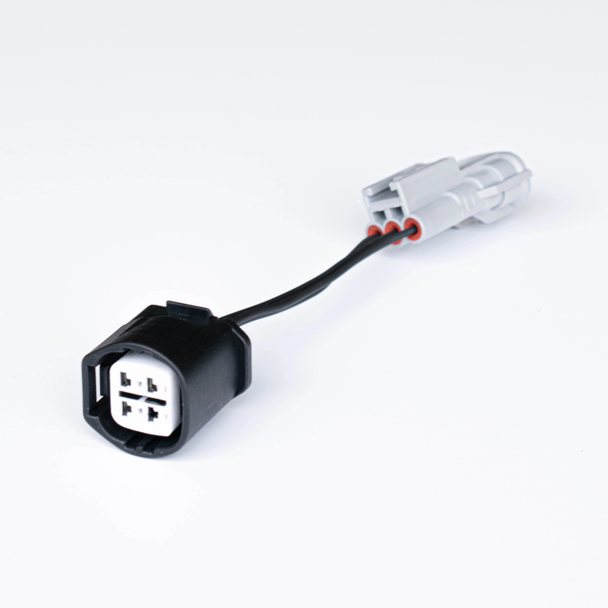

Sequoia / Tundra 2UZ Alternator Adapter Harness for 2JZ & 1UZ
Plugs into the stock 2JZ-GTE or 1UZ-FE alternator connector
Run the high-output Toyota Sequoia or Tundra 2UZ-FE alternator in your 2JZ or 1UZ build without touching a single wire in your existing harness. This plug-and-play adapter bridges the connector difference between the Sequoia/Tundra alternator and the stock 2JZ-GTE or 1UZ-FE alternator pigtail — no cutting, no splicing, no headaches.
The Sequoia and Tundra 2UZ alternators are a popular upgrade in the Toyota/Lexus swap community because they are junkyard-cheap, physically compatible, and put out significantly more amperage than the stock unit — making them ideal for builds running big fuel pumps, twin fans, audio systems, or any serious electrical load.
- Plug-and-play — no cutting or splicing
- Connects Sequoia / Tundra 2UZ-FE alternator to stock 2JZ or 1UZ connector
- OEM-quality terminals and weatherproof connectors
- Properly rated wire gauge for high-output alternator use
- Compatible with 2JZ-GTE, 2JZ-GE, and 1UZ-FE alternator connectors
- Hand-assembled and tested at SVK Works
Compatibility
| Alternator Side | Toyota Sequoia / Tundra 2UZ-FE |
| Harness Side | Stock 2JZ-GTE / 2JZ-GE / 1UZ-FE connector |
| Vehicles | MK4 Supra (JZA80), MK3 Supra (MA70), SC300, SC400, IS300, GS300, and 2JZ / 1UZ swap builds |
| Alternator Source | Toyota Sequoia 2001–2007, Toyota Tundra 2000–2006 (2UZ-FE) |
| Installation | Plug-and-play, no modification required |
Same-day shipping on orders placed before 3 PM. Questions?
More Amperage. Same Wiring.
The factory 2JZ and 1UZ alternators were sized for stock electrical loads. If you're running a high-pressure fuel pump, twin electric fans, a bigger stereo, or any meaningful aftermarket electrical load, a Sequoia or Tundra 2UZ alternator is a proven, budget-friendly upgrade. It physically fits, makes more power, and costs next to nothing at the junkyard. This adapter is the only missing piece.